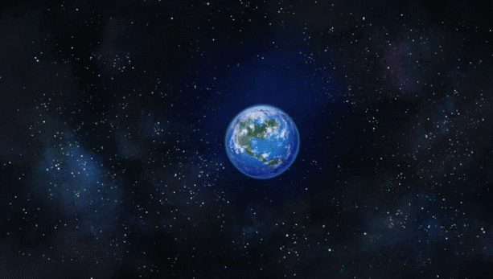

Kepler-452b

One superhabitable planet
It is not like kepler is not only the superhabitable planet, we will be just talk about one.
- Orbits around a star like sun's edge of teh goldilock zone called Kepler-452
- It is located 1,402 light-years from Earth
- Named after the person who found it "Kepler"